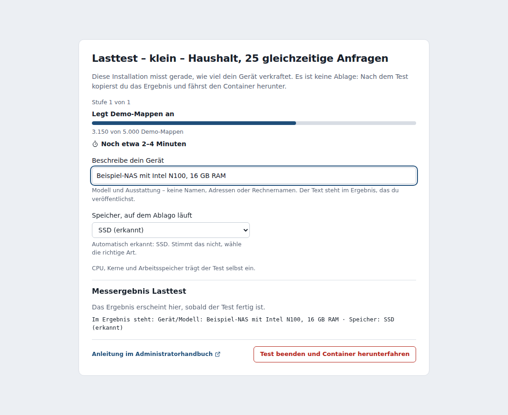
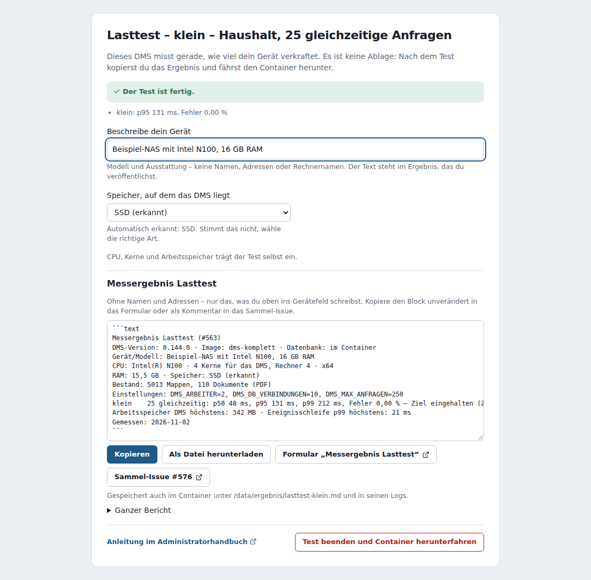
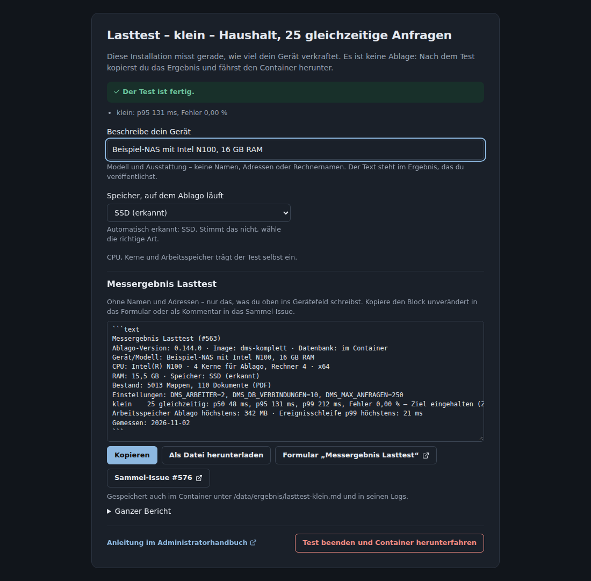
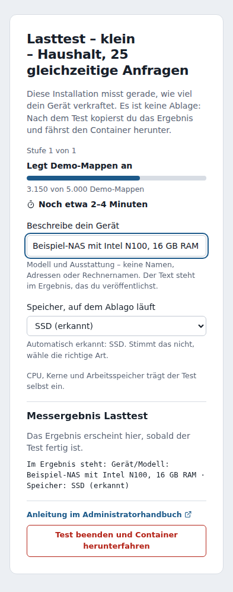

Lasttest selbst durchführen¶
Wie viel verkraftet Ablago auf deinem Gerät? Die Rechner, auf denen das Projekt jede Woche misst, sind kein NAS. Mit dem Lasttest misst du selbst – etwa vor dem Kauf eines neuen Geräts, vor einem Umzug oder wenn Ablago dir langsam vorkommt. Das Ergebnis kannst du freiwillig zurückmelden; daraus entsteht die Tabelle Was Ablago verkraftet.
Nur in einem eigenen Test-Container – nie in deiner echten Installation
Der Lasttest legt einen eigenen Haushalt mit Lasttest-Konten und bis zu 200.000 Demo-Mappen an, probiert falsche Passwörter aus (um den Anmeldeschutz zu prüfen) und belastet das Gerät minutenlang bis an seine Grenze. Starte dafür einen eigenen, neuen Container und lösche ihn danach wieder. Der Lasttest prüft das selbst: Ist Ablago schon eingerichtet und nicht vom Lasttest, oder liegen dort mehr als 200 Mappen, die keine Demo-Mappen sind, bricht er ab, bevor er etwas anlegt. Steht die Variable DMS_LASTTEST versehentlich in deiner echten Installation, läuft Ablago deshalb ganz normal weiter; die Übersicht der Werkbank meldet dann, dass der Lasttest nicht gestartet ist und du die Variable entfernen sollst.
Die drei Stufen¶
| Stufe | bildet ab | Last | Daten | Ziel |
|---|---|---|---|---|
klein |
Haushalt (2–5 Personen) | 25 gleichzeitige Anfragen, gemischt wie im Alltag | 5.000 Mappen | 95 % der Antworten schneller als 0,3 s, keine Fehler |
mittel |
Kleinbetrieb (10–15 Personen) | 100 gleichzeitig, dazu ein großer Export nach dem anderen | 50.000 Mappen | 95 % schneller als 1 s, weniger als 0,1 % Fehler |
gross |
Belastungsgrenze | alle 2 Minuten mehr gleichzeitige Anfragen (5, 10, 25, 50, 75 …), bis 95 % nicht mehr unter 3 s bleiben, mehr als 1 % fehlschlagen oder der Überlastschutz greift; danach kurz 1000 gleichzeitig | 200.000 Mappen | kein fester Wert – gemessen wird, wo die Grenze liegt; Pflicht: kein Absturz, Erholung von selbst |
Ziel und CI-Grenze: Das Ziel ist, was das Projekt zusagen möchte. Die wöchentliche Messung auf den Rechnern von GitHub prüft daneben eine CI-Grenze: den ersten Lauf dort plus 20 % – für klein 0,3 s (wie das Ziel), für mittel 2,86 s. Nur wenn sie verfehlt ist, wird der Lauf rot; sie wird mit der Zeit nur strenger, bis sie das Ziel erreicht. Ein verfehltes Ziel heißt: Das Projekt muss Ablago dort schneller machen. Was die Rechner von GitHub und gemeldete Geräte schaffen, steht unter Was Ablago verkraftet.
„Gemischt wie im Alltag“ heißt: Startseite, Listen, Mappen öffnen, Suchen, Vorschaubilder und Dokumente herunterladen, als Administrator und als Mitglied. 25 gleichzeitige Anfragen entsprechen etwa 2–5 Personen, die gerade klicken – ein Klick löst mehrere Anfragen aus.
Voraussetzungen¶
- Das Ablago ab Version 0.144.0 für den Weg im Browser (ab 0.132.0 geht der Weg für Fortgeschrittene).
- Platz für den Test-Container: etwa 1 GB für
kleinundmittel, 3–5 GB fürgross. - Ruhe auf dem Gerät: Laufen nebenher eine Sicherung des NAS, ein Medienserver oder Downloads, misst du die mit. Halte auch dein eigenes Ablago solange an, wenn gerade niemand damit arbeitet.
Schritt für Schritt – in der Docker-Oberfläche und im Browser¶
Du brauchst keine Konsole, keine Ordner und keine Befehle – nur einen neuen Container mit einer Umgebungsvariable.
-
Container anlegen – in der Docker-Oberfläche deines NAS (z. B. Docker bei UGREEN, Container Manager bei Synology, Container Station bei QNAP) einen neuen Container aus dem Image anlegen:
Einstellung Wert Image ghcr.io/motom001/dms-komplett:stabil(Ablago und Datenbank in einem Container)Name z. B. dms-lasttestPort ein freier Port des NAS, z. B. 8099, auf Port3000im ContainerUmgebungsvariable DMS_LASTTEST=klein(odermittel,gross,alle– siehe Die drei Stufen)Ordner (Volumes) keine Neustart-Regel aus bzw. „nie“ Ohne verbundene Ordner läuft alles im Container und verschwindet mit ihm – deine Ordner auf dem NAS bleiben unberührt.
-
Seite öffnen – im Browser
http://<Adresse des NAS>:8099, z. B.http://nas.home.arpa:8099. Statt der Anmeldung siehst du die Seite Lasttest: welche Stufe läuft, was gerade passiert (Test-DMS einrichten, Demo-Mappen anlegen, messen) und die geschätzte Restdauer. Die Seite geht auch am Handy.
-
Gerät beschreiben – in Beschreibe dein Gerät Modell und Ausstattung eintragen, z. B.
UGREEN DXP4800 Plus, 16 GB RAM. Keine Namen, Adressen oder Rechnernamen – der Text steht im Ergebnis, das du veröffentlichst. Was du tippst, steht sofort im Ergebnisblock. Darunter die Speicherart (HDD, SSD oder NVMe): Der Test erkennt sie, soweit das aus dem Container geht; sonst wählst du sie – „weiß nicht“ geht auch. CPU-Modell, Kerne und Arbeitsspeicher trägt der Test selbst ein. -
Warten –
kleindauert etwa 5 Minuten,mittel15–30 Minuten (50.000 Mappen anlegen),gross30–60 Minuten (200.000 Mappen anlegen, dann je Schritt 2 Minuten),alleentsprechend länger. Du kannst die Seite schließen und später wieder öffnen. -
Ergebnis kopieren – am Ende stehen der Block Messergebnis Lasttest mit Kopieren und Als Datei herunterladen, die Links zum Formular und zum Sammel-Issue #576 und – aufklappbar – der ganze Bericht. Wie du das Ergebnis liest und zurückmeldest, steht unten.

-
Test beenden – Test beenden und Container herunterfahren. Hast du das Ergebnis noch nicht kopiert oder heruntergeladen, fragt die Seite an dieser Stelle nach und bietet Ergebnis kopieren oder Trotzdem herunterfahren an. Danach steht dort „Danke, dass du mitgemessen hast!“: Der Container fährt herunter, du kannst die Seite schließen; das Ergebnis bleibt auf der Seite sichtbar und kopierbar. Mit
--rmgestartet, ist der Container danach weg; sonst löschst du ihn in der Docker-Oberfläche und bei Bedarf auch das Image.
So sieht die Seite dunkel und am Handy aus


Mit einem Befehl in der Konsole¶
Dasselbe in einer Zeile – --rm löscht den Container, sobald du den Test auf der Seite beendest:
docker run -d --rm --name dms-lasttest -p 8099:3000 -e DMS_LASTTEST=klein ghcr.io/motom001/dms-komplett:stabil
Danach weiter mit Schritt 2. Das Image löschst du bei Bedarf mit docker image rm ghcr.io/motom001/dms-komplett:stabil.
Einen bestimmten Datenträger messen¶
Ohne Ordner liegt alles dort, wo Docker seine Container ablegt – auf vielen NAS die System-SSD oder das erste Speicher-Volume. Willst du gezielt einen anderen Datenträger messen (z. B. die Festplatten statt der System-SSD), verbinde einen leeren Ordner auf diesem Datenträger mit /data im Container – das ist der einzige Grund für einen Ordner:
docker run -d --rm --name dms-lasttest -p 8099:3000 -e DMS_LASTTEST=klein \
-v /volume1/dms-lasttest:/data ghcr.io/motom001/dms-komplett:stabil
Der Test erkennt dann die Speicherart dieses Datenträgers, und das Ergebnis liegt zusätzlich als Datei in diesem Ordner unter ergebnis/. Lösche den Ordner nach dem Test.
Wo das Ergebnis sonst noch steht¶
Hast du die Seite geschlossen, bevor du das Ergebnis kopiert hast: Es steht auch in den Logs des Containers (in der Docker-Oberfläche unter Protokoll bzw. Logs) und als Datei im Container unter /data/ergebnis/lasttest-<stufe>.md – mit Gerät und Speicher, sobald du sie auf der Seite eingetragen hast. Startet der Container nach dem Beenden neu (Neustart-Regel), misst er nicht noch einmal, sondern zeigt das Ergebnis wieder an.
Für Fortgeschrittene¶
Der Lasttest steckt als Befehl dms-lasttest im Image. So misst du ohne die Seite im Browser – etwa die Variante mit getrennter Datenbank, mit eigenen Optionen oder von einem anderen Rechner aus.
-
Test-Installation starten – mit eigenem Namen, eigenem Port und eigenen, leeren Ordnern, z. B.:
docker run -d --name dms-test -p 8099:3000 \ -v /pfad/zu/dms-test/files:/data/files \ -v /pfad/zu/dms-test/geheim:/data/geheim \ -v /pfad/zu/dms-test/sicherung:/data/sicherung \ -v /pfad/zu/dms-test/postgres:/data/postgres \ ghcr.io/motom001/dms-komplett:stabilWillst du die Variante mit getrennter Datenbank messen, nimm deine Vorlage (Compose-Datei) als eigenes Projekt, z. B.
dms-test, mit anderen Ordnern und anderem Port – dort geht auch der Weg im Browser mitDMS_LASTTEST. Nicht einrichten – das macht der Lasttest. -
Stufe starten – im Test-Container, also auf demselben Gerät:
docker exec -it dms-test dms-lasttest klein --geraet "Modell deines Geräts" --speicher SSDStatt
kleingehtmittel,grossoderalle(alle drei nacheinander). Beim ersten Start richtet der Lasttest das frische Ablago selbst ein; den Einrichtungscode liest er aus dem Ordnergeheim. Fehlen für eine größere Stufe Mappen, legt er die Demo-Mappen dazu und wartet, bis Ablago mit der Arbeit im Hintergrund fertig ist.dms-lasttest --pruefenprüft nur, ob der Lasttest hier laufen dürfte, und legt nichts an. -
Ergebnis lesen – am Ende stehen ein Bericht und darunter der Block Messergebnis Lasttest.
-
Aufräumen: Test-Container stoppen und löschen (
docker rm -f dms-test), die Ordner der Test-Installation löschen.
Optionen: --geraet "…" und --speicher HDD|SSD|NVMe tragen Gerät und Speicher in den Ergebnisblock ein (sonst steht dort „bitte ergänzen“). --dauer <Sekunden> ändert die Messdauer von klein und mittel (Vorgabe 120; im Weg über den Browser mit der Variable DMS_LASTTEST_DAUER). --start, --schritt und --schritt-dauer ändern die Steigerung von gross (Vorgabe: 5 und 10, dann ab 25 in Schritten von 25, je 120 Sekunden; mit --start beginnt sie genau dort), --bis <n> begrenzt sie. --bericht <Datei> speichert den Bericht.
Den Lasttest auf einem anderen Rechner gegen die Test-Installation laufen zu lassen geht auch (--ziel http://…:8099); dann fehlt im Ergebnis das CPU-Modell, und das Netzwerk misst mit.
Ergebnis lesen¶
- p50, p95, p99: Die Hälfte, 95 % bzw. 99 % der Antworten kamen schneller als dieser Wert. p95 ist der wichtigste: Er zeigt, wie es sich anfühlt, wenn es gerade hakt.
- Fehlerquote: Anteil der Anfragen mit Serverfehler oder ganz ohne Antwort. Abgewiesene Anfragen („gerade sehr beschäftigt“, 503) zählen extra.
- Ziel eingehalten / verfehlt (
klein,mittel): ob dein Gerät die Ziele der Tabelle oben schafft. Verfehlt heißt nicht kaputt – Ablago ist dann bei so vielen gleichzeitigen Anfragen langsamer, als das Projekt es sich vornimmt. Der Bericht nennt dazu die CI-Grenze des Projekts (z. B. „Ziel p95 < 1000 ms, CI-Grenze 1000 ms“); sie gilt für die Messung auf den Rechnern von GitHub, nicht für dein Gerät. Gerade wenn dein Gerät das Ziel verfehlt, hilft deine Meldung im Sammel-Issue #576. - Grenze (
gross): so viele gleichzeitige Anfragen schafft das Gerät noch mit 95 % der Antworten unter 3 s, dazu die Anfragen je Sekunde. Darunter steht, warum der nächste Schritt zu viel war, und wie schnell sich Ablago nach 1000 gleichzeitigen Anfragen erholt hat. - Arbeitsspeicher und Ereignisschleife p99 (wie lange Anfragen höchstens warten mussten, weil der Server rechnete) zeigen, wo es eng wird. Hinweise zu den Einstellungen dafür stehen unter Systemzustand → Einstellungen und Engpässe.
Ergebnis zurückmelden¶
Der Block Messergebnis Lasttest enthält keine personenbezogenen Daten und keine Adressen, Rechner- oder Haushaltsnamen – nur Ablago-Version, Image, wo die Datenbank läuft, Gerät (was du ins Gerätefeld schreibst), CPU, Kerne, Arbeitsspeicher, Art des Speichers, Zahl der Mappen und Dokumente, je Stufe p50/p95/p99 und Fehlerquote, die Grenze, die Spitze des Arbeitsspeichers und die Ereignisschleife. Kopiere ihn unverändert (auf der Seite mit Kopieren) in das Formular Messergebnis Lasttest auf GitHub oder als Kommentar in das Sammel-Issue #576, wo alle Messergebnisse zusammenkommen. Der Beitrag ist öffentlich; alles ist freiwillig – Ablago selbst meldet nichts.